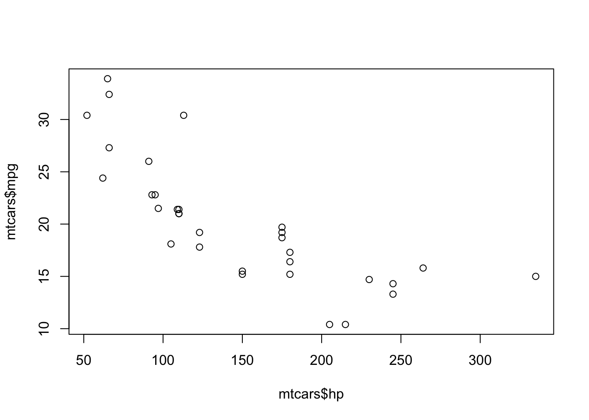

2 Programming 101
The goal of this chapter is not to turn you into an R programmer, but to cover the most important programming concepts so that you feel more comfortable using R and are able to get up and running with your analyses as fast as possible.
Running R Code
The rest of this booklet will contain code blocks that look like this:
# This is a code block, and this is an example of a comment.
# You can comment your script by using the hashtag.
# That way you can make notes to yourself and keep track of what your code
# is doing at each step.You can copy and paste the code within the blocks into your R script to try it out for yourself; but the code above is just a comment so it won’t do anything exciting. The code blocks will often (but not always) have some sort of output printed directly below them so that you can see the results.
For example:
[1] 5.5In the example above, the code block consisted of code that calculated the mean of the numbers 1 through 10, and the results were printed directly below. Notice how the output is printed in black font, which is how you can distinguish the code blocks from the output blocks.
You can “run” a line of code in R by pressing Cmd + Enter on a Mac and Ctrl + Enter on a Windows. For example, if you wanted to know what 75 times 82 is, you could type 75 * 82 into your script and “run” the code by using Cmd + Enter or Ctrl + Enter to get the answer. Doing this will run only the selected line of code, meaning that your cursor must be on the line you want to evaluate in order for it to work. You can also type code directly into the console and run it by hitting Enter.
“Why would I type code directly into the console?”
You might want to type code directly into the console when you’re performing calculations but you don’t care about saving the results. A script is like a notepad where you can save your analysis. If you needed to calculate
75 * 82, it’s probably not essential to have that calculation saved to your notepad, so you can type it directly into the console to keep your notepad clean. That way, you won’t have to constantly delete irrelevant code and calculations from your script.
R is a calculator
Try out R’s calculator functionality by copying and pasting the code below into your R session.
Objects and Assignment
One of the most basic programming concepts is assignment. Let’s say we want the letter x to refer to the value 5. You can do this by assigning x to the value 5 with the assignment operator, <-, or with the equal sign operator, =:
In both of these examples the result is the same: x is now assigned to the value 5. It’s a matter of personal preference which operator you’d like to use (<- or =), but it’s best to be consistent to make your script more readable.
x is now considered an object. An object is a name used to reference a value or set of values. The object x refers to the value 5. Instead of just assigning the number 5 to x, we could perform several calculations and then assign the result to an object, like so:
x <- sqrt(34 + ((12 * 2)^3 - 5))
x # Typing x by itself, like this, will print the value to the console[1] 117.6988The object x no longer refers to 5. We overwrote x and assigned it to a new value, ~117.7.
When analyzing data, you’ll likely need to transform the data before you can run statistical tests. You can accomplish this by transforming the data and then saving the data as a new object. Let’s look at one more example.
Sepal.Length Sepal.Width Petal.Length Petal.Width Species
1 5.1 3.5 1.4 0.2 setosa
2 4.9 3.0 1.4 0.2 setosa
3 4.7 3.2 1.3 0.2 setosa
4 4.6 3.1 1.5 0.2 setosa
5 5.0 3.6 1.4 0.2 setosa
6 5.4 3.9 1.7 0.4 setosaHere’s one of R’s built-in datasets, which is called iris and consists of 3 flower species (setosa, virginica, versicolor) and their their petal characteristics. Let’s say we only wanted to include virginica flowers in our analysis.
The code above filters the data to include only virginica plants, but we didn’t assign it to an object so we have no way of referencing our filtered data.
Sepal.Length Sepal.Width Petal.Length Petal.Width Species
101 6.3 3.3 6.0 2.5 virginica
102 5.8 2.7 5.1 1.9 virginica
103 7.1 3.0 5.9 2.1 virginica
104 6.3 2.9 5.6 1.8 virginica
105 6.5 3.0 5.8 2.2 virginica
106 7.6 3.0 6.6 2.1 virginicaThe code above looks much better. The filtered data has been assigned to the object iris_virginica, so we now have a way to reference that data, and we could use this object to analyze the virginica plants exclusively.
Variable Types
R has several different variable types, and to manipulate your data it is good to be aware of them.
0.5, 2 # Numeric class
TRUE, FALSE # Logical class
"hat", "dog" # Character class
5L, 12L # Integer class ("L" stores the value as an integer)
1+0i, 2+4i # Complex class
"yes", "no" # Factor class (categorical variable; each level is a category)These variable types are the basic building blocks, and all values in R belong to one of them. You may have a situation where your data is imported as character but you’d like to change it to factor, or vice versa. But first, what exactly is a character class and what is a factor class? In the code block above, the example shows that "hat" and "dog" are of the character class; this means that R will interpret these values as letters and words, and nothing more. A factor class, on the other hand, will have an extra layer of complexity. Factors will be interpreted as categories, and not simply words. In the code block above the example given is yes and no as being of the factor class. Let’s say you had a dataset with 100 observations and 50 observations responded to a question with “yes” and 50 with “no”. If this were a character class, you would not be able to treat “yes” and “no” as categories. In order to be treated as categories, you would need to convert the values to a factor class that has two levels: yes and no. You can easily do this with the as.factor() and as.character() functions, which will be discussed in greater detail in Chapter 6.
[1] 1 2 3 4 5When you combine values, it’s called concatenation. In the above example, numeric values were concatenated together and assigned to the object y The object y now refers to 5 values: 1, 2, 3, 4, 5. When we concatenate values together like this, we create a data type.
Data Types
R has many data types, but the only one we’ll worry about is the data frame. A data frame is usually the object that’s created when importing a data file into R. A data frame consists of columns and rows, where each column is the same length. Here’s an example of one of R’s built-in data frames called mtcars:
mpg cyl disp hp drat wt qsec vs am gear carb
Mazda RX4 21.0 6 160 110 3.90 2.620 16.46 0 1 4 4
Mazda RX4 Wag 21.0 6 160 110 3.90 2.875 17.02 0 1 4 4
Datsun 710 22.8 4 108 93 3.85 2.320 18.61 1 1 4 1
Hornet 4 Drive 21.4 6 258 110 3.08 3.215 19.44 1 0 3 1
Hornet Sportabout 18.7 8 360 175 3.15 3.440 17.02 0 0 3 2
Valiant 18.1 6 225 105 2.76 3.460 20.22 1 0 3 1Each column within the data frame consists of only one variable type, and this is always the case for data frames. In the mtcars data frame above, all columns are numeric. Even though some may look like integers or factors, they are not. How variable types can be changed will be discussed in Chapter 6.
Dollar Signs and Brackets
When working with datasets, you’ll often want to extract/reference part of the dataset. For example, in the mtcars dataset above, you might want to visualize the relationship between the hp (horsepower) and mpg of cars. We need to have a way of referencing these specific columns within the dataset; this can be accomplished with brackets, [], and dollar signs, $. Brackets and dollar signs allow you to subset the data. For example, here’s a plot of the hp and mpg relationship:

In the code above, the dollar sign was used to selected the hp and mpg columns from the mpg data frame. Although not the most precise definition, you can think of the dollar sign as allowing you to select part of an object. In the example above, the column was the “part” that was selected, but other “parts” can be selected as well, which you’ll see in the statistical modeling section.
Similarly to the dollar sign, brackets can be used to subset:
mpg
Mazda RX4 21.0
Mazda RX4 Wag 21.0
Datsun 710 22.8
Hornet 4 Drive 21.4
Hornet Sportabout 18.7
Valiant 18.1In the code above, the first column of the mtcars dataset was selected, which is the mpg column (the head() function was also used so that only the first few observations were printed).
You can use brackets to subset both the columns and the rows of a dataset:
[1] 21.0 21.0 22.8 21.4 18.7 18.1In the code above, the first 6 rows of the first column were selected from the mtcars dataset.
Functions and Arguments
So far we’ve seen R as a calculator, created objects, learned about variable types and data types, and subset data. But how do we actually do things in R? That is, how do we manipulate data and run a statistical analysis?
To do just about anything in R you use functions. What functions do in R is take a process that would normally be a hassle for the user and make it easier. For example, the mean() function. We’re all familiar with how the mean is calculated, and we could calculate this manually in R. If we wanted the mean of the numbers c(1, 3, 4, 4) we could simply sum the numbers and divide by n to get 3. But why do that when we can just use the mean() function? And that’s the basic idea of a function: to simplify things for us. The lm() function creates a linear model from our data, which again we could achieve the same result by manually performing many calculations, but this would be a time-consuming, arduous task, and using the lm() function greatly simplifies the process.
Functions are great because they can simplify and streamline a process, but how do you make the function do exactly what you need to do in your analysis? Let’s take a look at the factor() function to get an idea of how to take advantage of functions and arguments.
Factors are categorical variables, where each level is a category. Here is an example of character data that’s been converted to a factor with the factor() function:
y <- c("cat", "dog", "cat", "cat", "dog", "cat", "dog")
y <- factor(y) # y is converted to a factor with 2 levels
y[1] cat dog cat cat dog cat dog
Levels: cat dogIn this example, two levels are created from the data: cat and dog. Let’s slightly modify this example and say that data was entered incorrectly into a column, so the column looks like this:
[1] cat dg cat cart dog cat dog
Levels: cart cat dg dogBecause of the typos, we now have 4 levels–cat, dg, cart, dog– and that’s clearly not what we want. To make the most of the factor() function, we can make use of its arguments, which allows us to have greater control over what the function does and how it manipulates the data. We could ignore the typos by using the levels argument, which is a way of specifying how many levels we’re supposed to have for the data:
[1] cat <NA> cat <NA> dog cat dog
Levels: cat dogWe’re now back to two levels, and the typos were treated as NA. Now let’s say we wanted to recode cat as 0 and dog as 1. We could use the labels argument, which creates a new label for the corresponding level (in order):
y <- c("cat", "dg", "cat", "cart", "dog", "cat", "dog")
y <- factor(y, levels = c("cat", "dog"), labels = c(0, 1))
y[1] 0 <NA> 0 <NA> 1 0 1
Levels: 0 1By using factor()’s arguments we were able to get the function to do what we wanted it to do, not just what it does by default. This is just one example of what makes a programming language like R so powerful!
Example
Now let’s look at a more complete example of functions and arguments with the lm() function.
lm(formula, data, subset, weights, na.action,
method = "qr", model = TRUE, x = FALSE, y = FALSE, qr = TRUE,
singular.ok = TRUE, contrasts = NULL, offset, ...)Above is the lm() function used for fitting linear models. The function has many arguments, but most of the arguments have default values; what this means is that you do not need to assign a value to that argument in order for the function to work. For example, in this function the default method argument is set to qr: method = "qr". This means that when you use the lm() function, the method will be set to qr even if you don’t explicitly set it to qr; hence, qr is the default (which is referring to QR Decomposition, in case you were curious). The idea of a default argument is very important point, because the default arguments for a function can impact the way the function behaves without the user being aware of it. Keep this in mind if you’re using a function and the results are not what you’d expect them to be.
In addition to arguments that have default values, there are also arguments which are optional. In the lm() function above, subset, weights, na.action, and offset are all optional arguments. Unsurprisingly, this means that these arguments do not need to be used, but they can be.
We can now see why the code below is valid, even though there are many arguments that were not specified.
We can also see why this code below is valid. The subset argument is optional, and here we used it to specify that we only want to include the first 10 observations in our model.
“But how do I know what the arguments are for a given function, what they do, which arguments have default values, which ones are optional, and which ones I need to specify?”
This is where the documentation comes in handy. You can type a question mark in front of the function you’d like to learn more about (
?factor). If you’re using RStudio, this will bring up the documentation page for that function under the help tab in the lower right pane, which will usually include a description, the arguments (and their descriptions), and example code showing how to use the function. You can also type the function into the search bar under the help tab on the lower right pane.Hopefully, though, we’ll provide enough example code throughout this book that you won’t need to concern yourself with all of these details. But, we can’t provide examples of everything for every situation, and you’ll almost certainly use functions that aren’t covered in this book. This is where having a basic understanding of these topics will come in handy.
Code Formatting
As a final note, just know that the spacing in your code doesn’t matter. You can type 5 * 5 or 5*5 and get the same result. You can type mean(1:10) or mean(1 : 10) and you’ll get the same result. You can even type mean (1:10) or mean (1 : 10), but you probably shouldn’t because this is very unconventional.